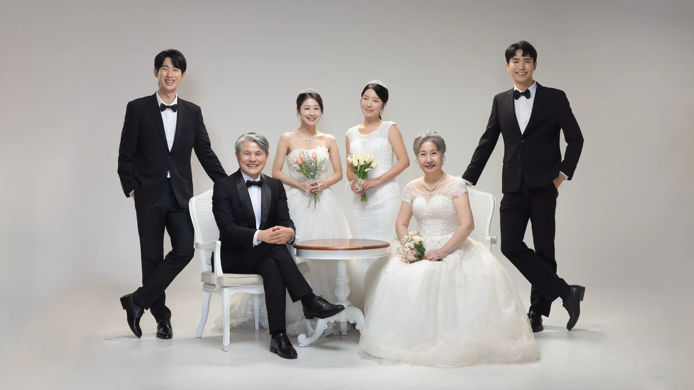
SEASON EVENT
이벤트
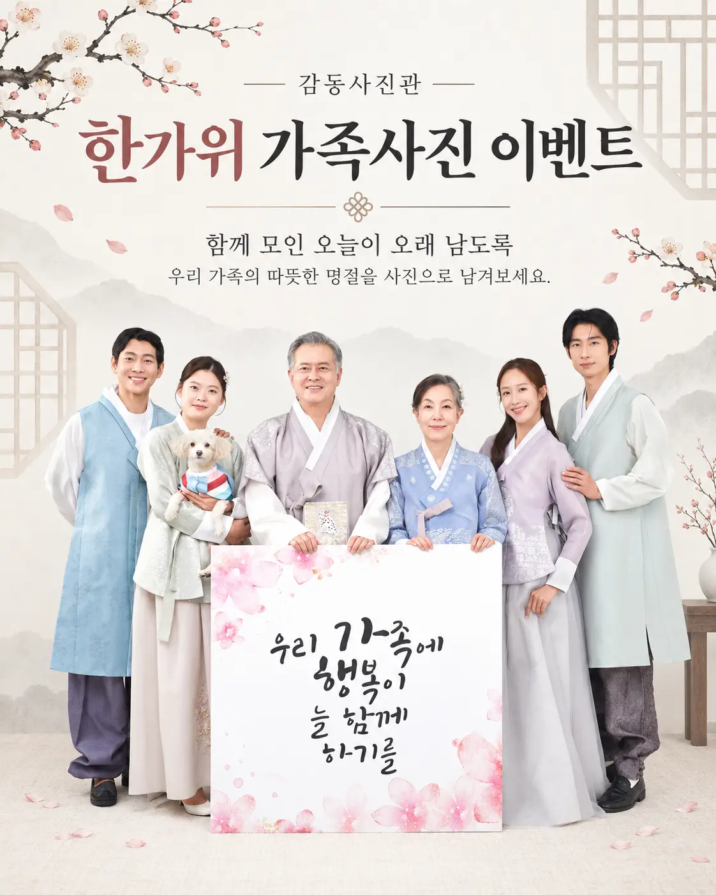
PRODUCT GUIDE
가족사진 패키지
PHOTOGRAPHY
촬영 분야 안내
GALLERY
갤러리
가족사진
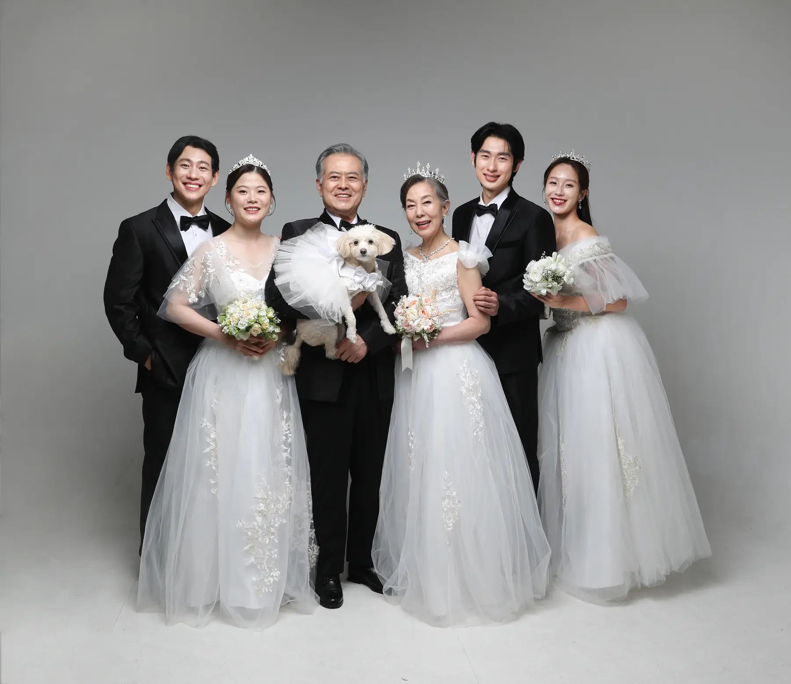
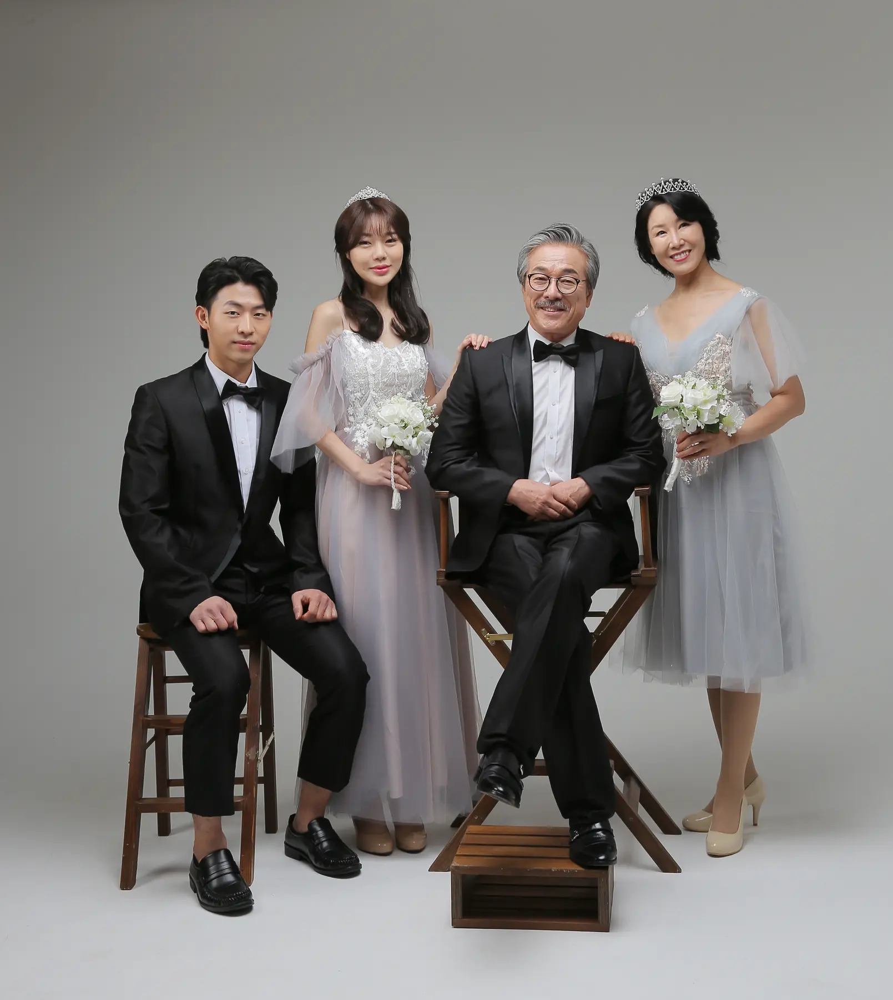
프로필사진
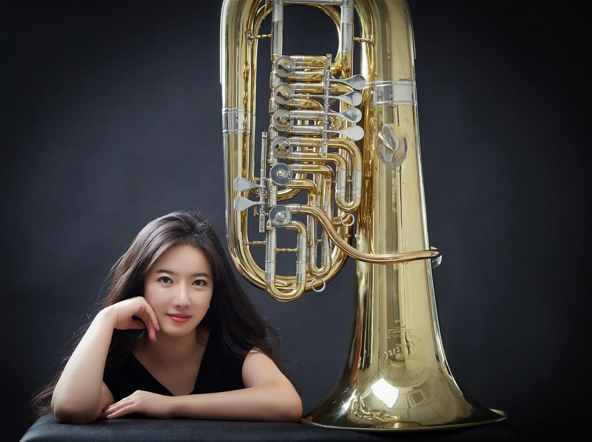
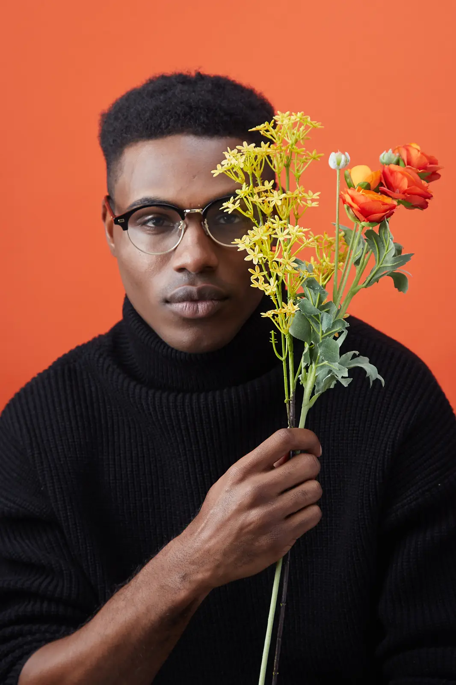
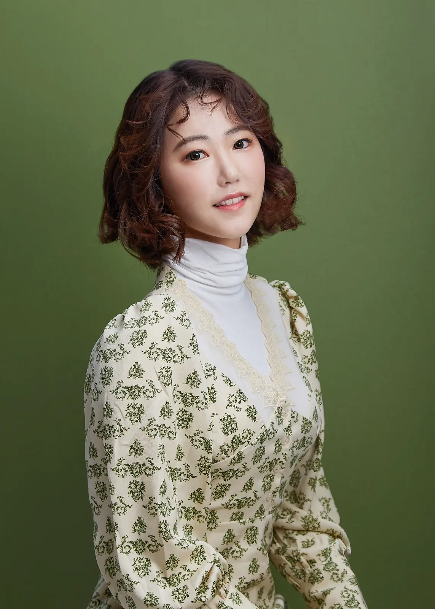
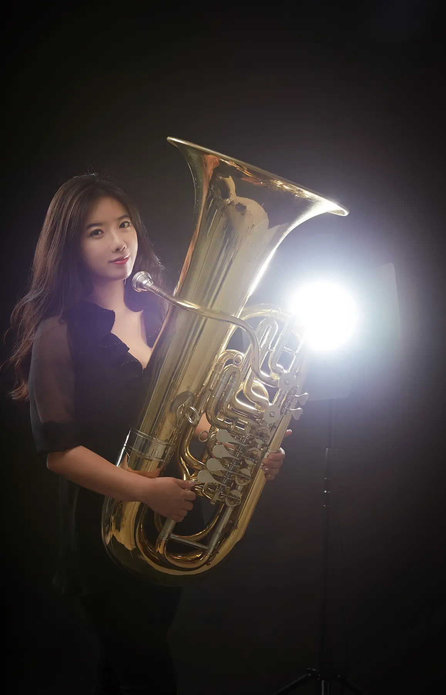
반려동물사진
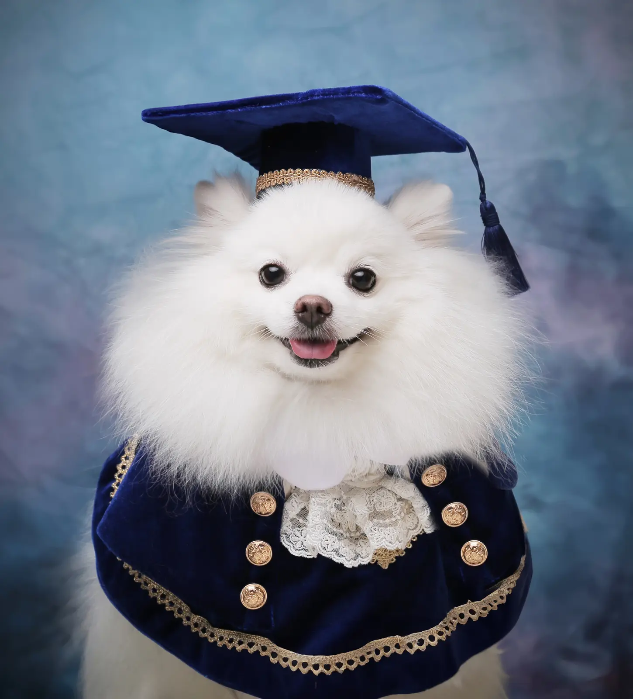
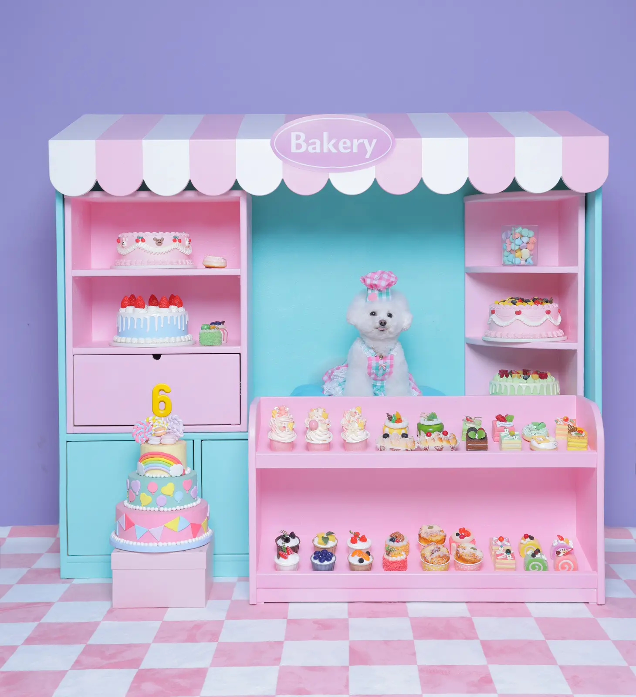
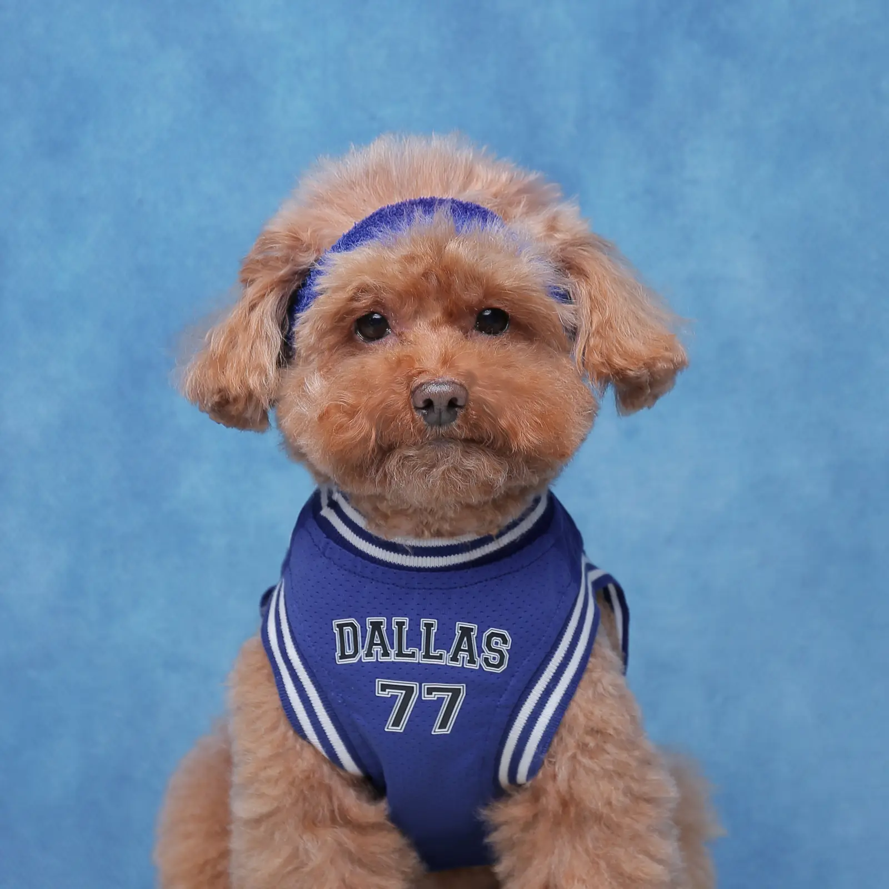
증명사진
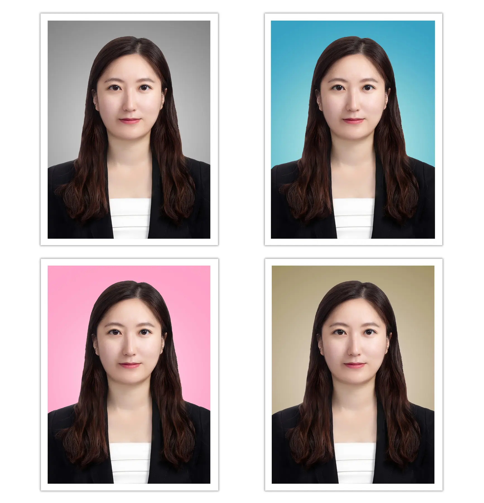
SINCE 2018
사진으로 마음을
기록하는 곳
사진을 찍는다는 것은 지금 이 순간의 모습뿐 아니라 그 안에 담긴 마음까지 오래 남기는 일이라고 생각합니다.
감동사진관은 가족사진, 프로필사진, 반려동물사진, 증명사진을 촬영하며 한 분 한 분의 이야기를 정성스럽게 기록합니다.
류수민 감동사진관 대표
(사)한국프로사진협회 교육자격위원회 위원